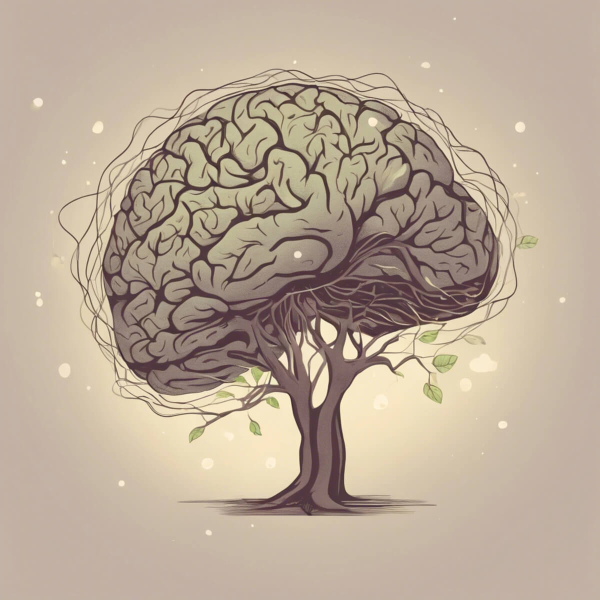

My Projects
Project Untangle
Purpose
Access to therapists five days a week in the palm of the user's hand in the comfort of their own space at their own pace and at their own time.
Objective
Encourage users to book appointments with their chosen therapists.
Role
UX and UI Designer
UX Researcher
Duration
7 months
User Research
I did a competitive analysis between betterhelp and talkspace to have a better
comprehension of what the two best mental health therapy apps have in
common and what makes them both stand out from the rest. From there, I
conducted user surveys and interviews on what behaviors, attitudes, needs, and
goals I should focus on for my mental health therapy app. With the insights and
feedback received, I created two user personas to reflect upon the goals of
Untangle.


User Personas & User Journeys
I created Mieko and Giovanni in hopes of having a better visualization and idea of the user’s goals, wants, needs, and behaviors. This enabled me to have a different POV that helped with solving real life problems. User journeys were then created to emphasize the important features of the application that the personas would like to achieve.


Site Map
I conducted card sorting with OptimalSort and tested participants to see which features of Untangle they think would go where with specific categories. With the results, I revised a site map that has better functionality and flow for the features of Untangle.

Prototype + Usability Testing
I drew up low fidelity wireframes to get a feel of how I would want the layout to be, but it still felt a little too simple for me. After going through trials and errors, and receiving feedback, my mid-fidelity wireframes started to flow a little better. I conducted usability testing to better assess the functionality of the prototype and I received valuable feedback from participants that helped me improve my prototype into its high-fidelity stage. As I progressed into the high-fidelity prototype, I did some peer collaborations to gain even more feedback with the high-fi stage. With all the comments received, Untangle’s high-fidelity prototype felt very much so polished.


Color Palette

Typography